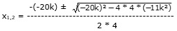

Quadratische Gleichungen Aufgabe 80 Für welche Zahlen für k hat die Gleichung 4x² - 20kx - 11k² = 0 genau eine Lösung? A, B, C -Formel A = 4 ; B = -20k ; C = -11k²  Es gibt genau dann eine Lösung, wenn der Wert unter der Wurzel, die Diskriminante, gleich 0 ist. (-20k)² + 176k² = 0 400k² + 176k² = 0 576k² = 0 | :576 k² = 0 |√ k = 0 Für k = 0 hat die Gleichung genau eine Lösung.